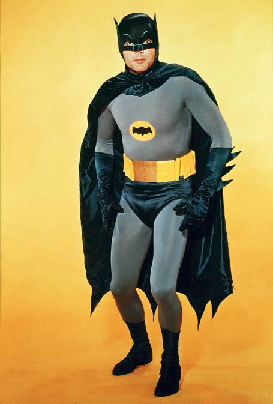
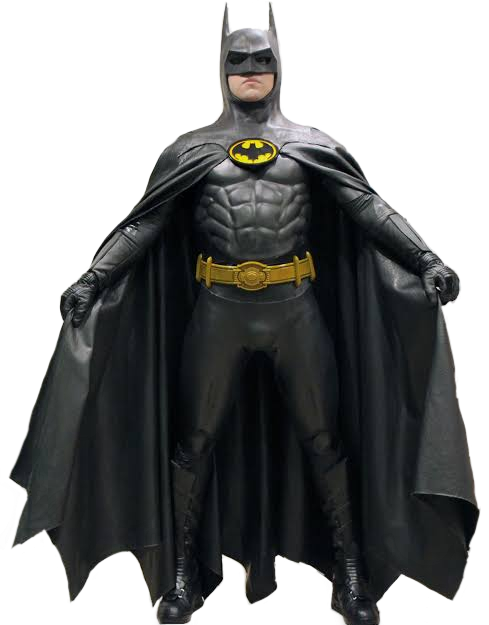
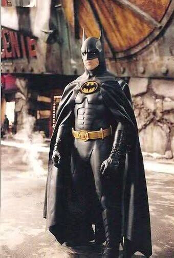
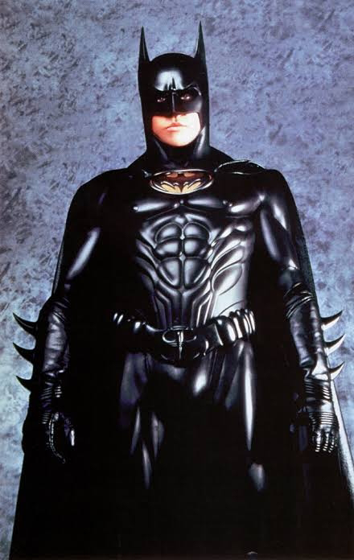
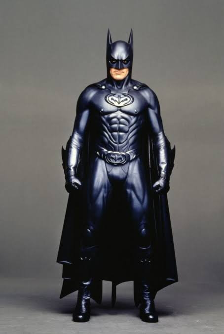
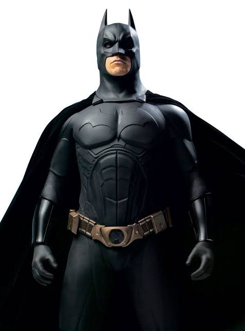
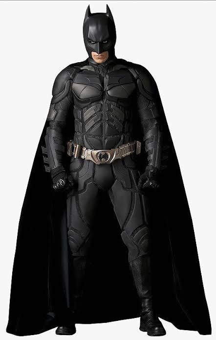
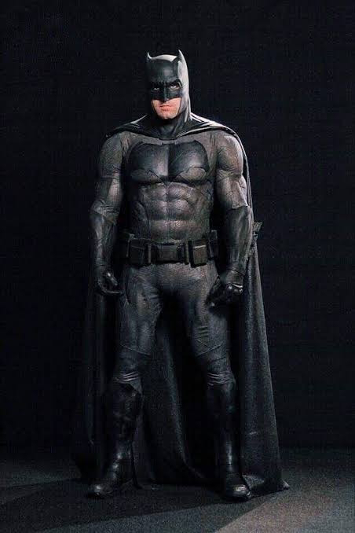
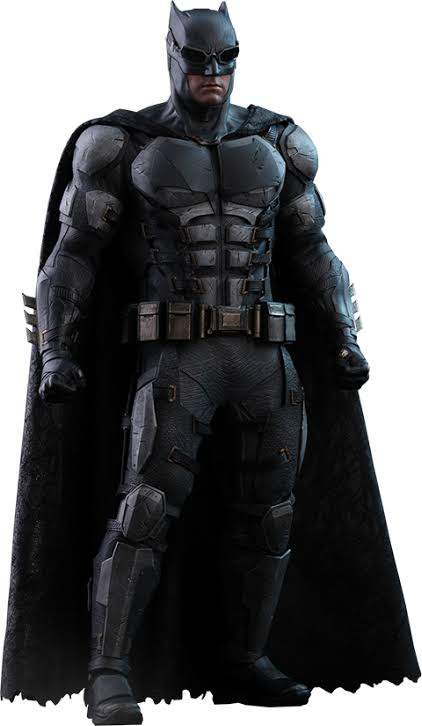
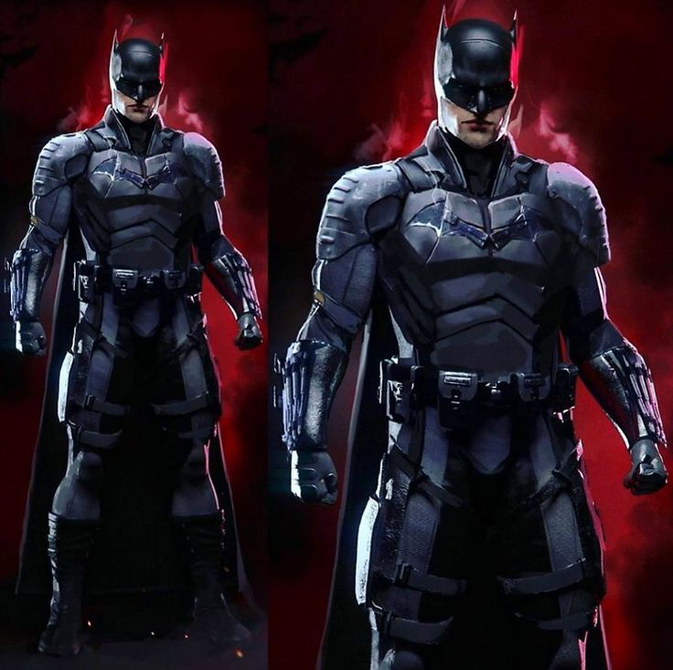

Batman (1966)

Batman (1989)

Batman o retorno (1992)

Batman eternamente (1995)

Batman e Robin (1997)

Batman Begins (2005)

Batman o cavaleiro das trevas (2008)

Batman vs Superman: A origem da justiça (2016)

Liga da justiça (2017)

O Batman (2022)
